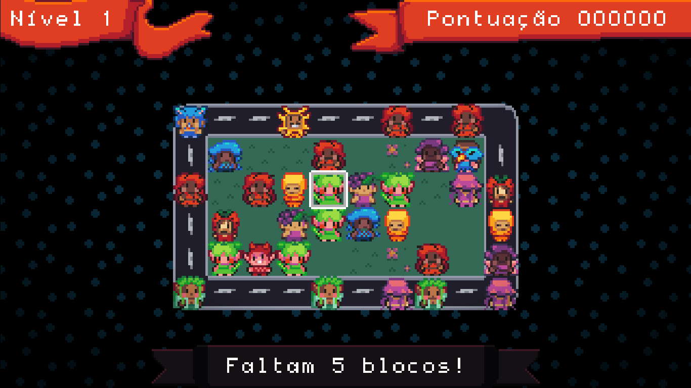

Mãe Joana
Mãe Joana precisa enfrentar uma tempestade traiçoeira para resgatar seus filhos e voltar em segurança para casa. O
jogador deve se equilibrar e cronometrar com perícia seus movimentos, alternando entre os momentos de calmaria,
quando os ventos e a chuva diminuem, e os períodos intensos e turbulentos que ameaçam desviar Joana do caminho.
Dominar esse equilíbrio delicado é essencial para superar os desafios e alcançar a segurança do lar.